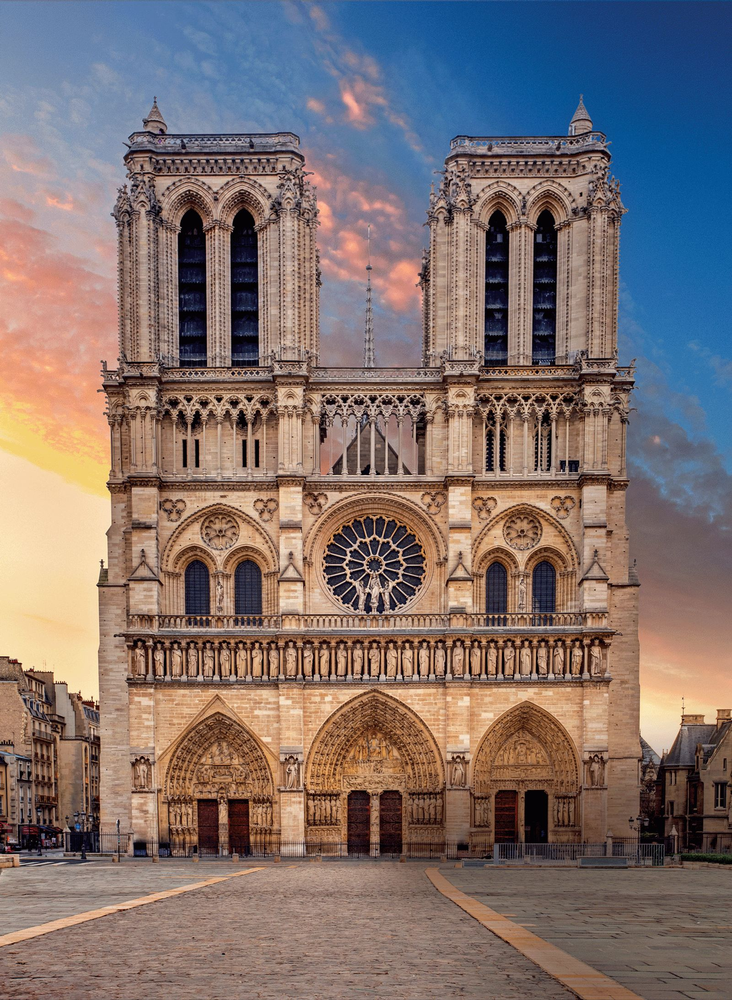
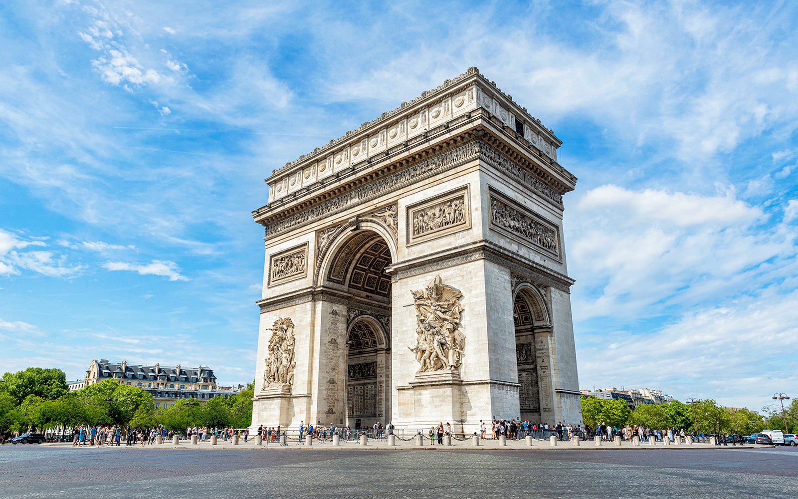

Paris, capitale de la France, est une grande ville européenne et un centre mondial de l'art, de la mode, de la gastronomie et de la culture. Son paysage urbain du XIXe siècle est traversé par de larges boulevards et la Seine. Outre les monuments comme la tour Eiffel et la cathédrale gothique Notre-Dame du XIIe siècle, la ville est réputée pour ses cafés et ses boutiques de luxe bordant la rue du Faubourg-Saint-Honoré
a cathédrale Notre-Dame de Paris, communément appelée Notre-Dame, est l'un des monuments les plus emblématiques de Paris et de la France. Elle est située sur l'île de la Cité et est un lieu de culte catholique, siège de l'archidiocèse de Paris, dédié à la Vierge Marie
La tour Eiffel est une tour de fer puddlé de 330 m de hauteur située à Paris, à l’extrémité nord-ouest du parc du Champ-de-Mars en bordure de la Seine dans le 7ᵉ arrondissement. Son adresse officielle est 5, avenue Anatole-France.

L'arc de triomphe de l'Étoile, souvent appelé simplement l'Arc de Triomphe, est un monument de type tétrapyle situé à Paris, en un point haut à la jonction des territoires des 8e, 16e et 17e arrondissements, notamment au sommet de l'avenue des Champs-Élysées et de l'avenue de la Grande-Armée, lesquelles constituent un grand axe est-ouest parisien partant de la pyramide du Louvre, passant par l'obélisque de La Concorde, l'Arc de Triomphe lui-même et se terminant au loin par l'arche de la Défense. Sa construction, décidée par l'empereur Napoléon Ier, débute en 1806 et s'achève en 1836 sous le règne de Louis-Philippe.
